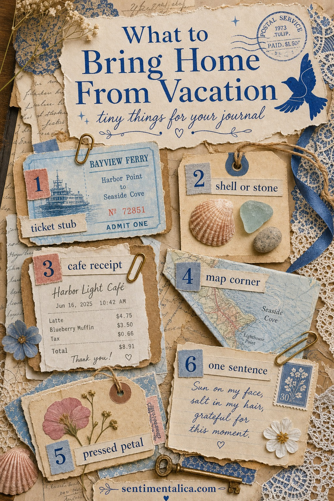
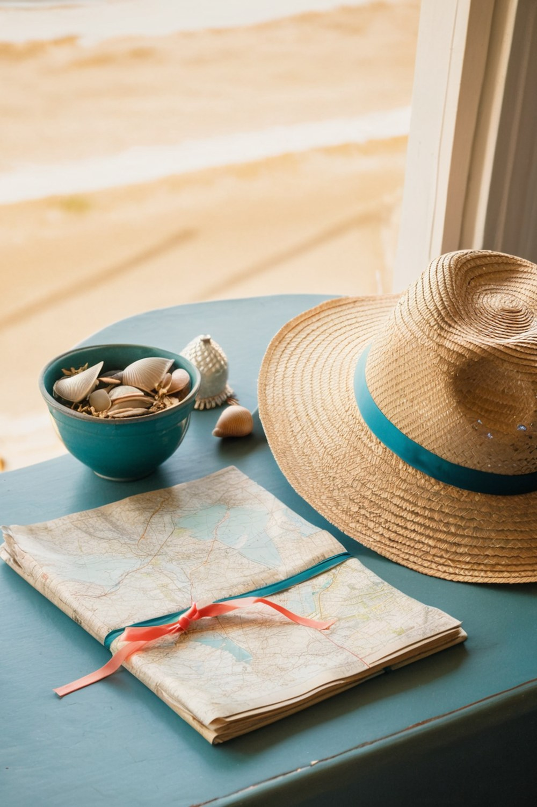
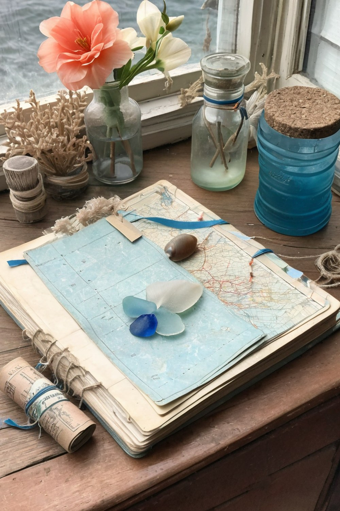
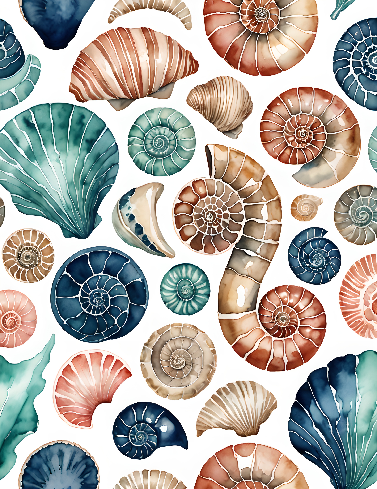
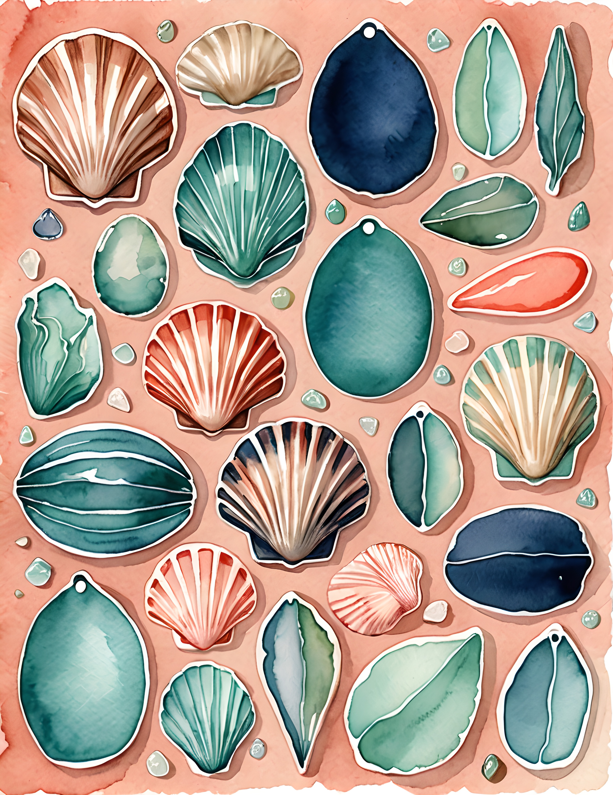
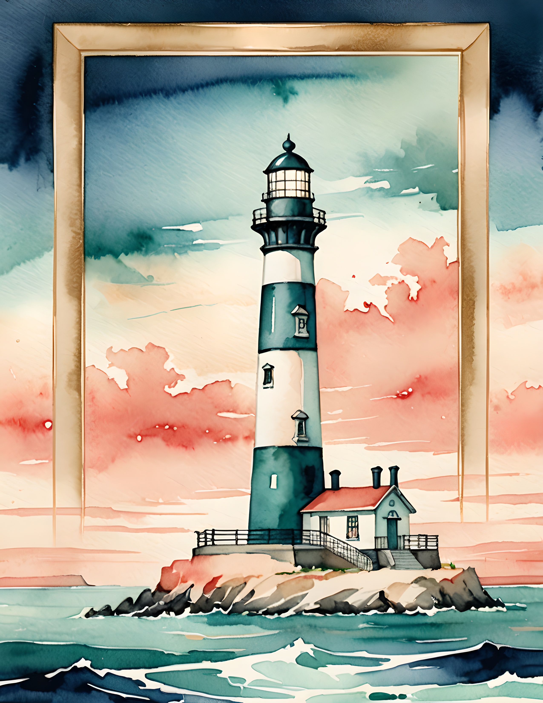

A vacation journal does not need a suitcase full of souvenirs. It needs a few small proofs that the day really happened: the paper you touched, the color you noticed, the ordinary thing that suddenly feels precious once you are home.
Before you pack, give yourself one tiny envelope or zip pouch. That is the limit. It keeps collecting sweet instead of chaotic, and it makes every saved piece feel chosen.

Start with the paper trail
Paper is the easiest memory to journal with because it already carries place. Save one ticket stub, one museum receipt, one ferry slip, a bakery bag corner, or the printed sleeve from a hotel key. You do not need the whole thing. A torn edge is often prettier than the full receipt.
If the paper is glossy or too bright, tuck only a corner under cream paper or lace. Let a date, a place name, or one small printed line show. That little visible clue does more than a perfect decorative sticker.

Choose one natural thing
Do not bring the whole beach home. Choose one shell, one small stone, one bit of sea glass, or one pressed petal from a walk. The object can sit beside the page while you work, then you can trace its shape, photograph it, or make a little note about where you found it.
The best vacation pages usually come from restraint: one receipt, one color, one object, one honest sentence.
For coastal trips, I like repeating the same three colors: sea-glass blue, shell cream, and a little coral blush. It makes mixed scraps feel intentional even when they came from different places.

Write the sentence before it disappears
The thing you will forget is not the landmark. It is the small feeling: wet sandals by the door, the cafe table wobbling, the salt in your hair, the way the light looked on the walk back. Write one sentence on your phone or on the back of a receipt before the day becomes too polished.
Later, that sentence can become the center of the page. Put it on a torn strip, tuck it under a ticket, or write it beside a shell drawing. The page will feel lived-in because it has a real voice inside it.
Use coastal pages as the quiet base
If your collected pieces are small and mismatched, a printable coastal page can give the spread structure. Use it as the background, then let your real vacation scraps sit on top: ticket, map corner, receipt, shell sketch, and the sentence you saved.
The Coral Dance pages are a good match for beach memories because the palette already has deep sea blue, shell cream, coral, and teal. They work best when you want a coastal page that feels romantic rather than touristy.



A tiny packing list
- One flat envelope for paper scraps
- A pencil or pen you actually like writing with
- A small clip for tickets and receipts
- A note on your phone called “vacation page lines”
- Permission to keep less than you think you should
When you get home, do not wait for the perfect page idea. Put the scraps on the table, choose the strongest color, and make one small spread while the trip still has air around it. For more soft coastal page ideas, keep browsing the Sentimentalica journal.